Top-down pixel survival fishing. Resource loop, quota, and a QTE on a small boat.
You skipper a small boat. A quota and a deadline sit on the HUD. Fish to pay the quota. Manage health and supply so the hull does not starve, and keep clear of the monsters that take a bite out of it. Hit a wreck for a supply dump. Clear the quota and the job renews with more days and a fresh target. Miss it, or hit zero health, and the run is over.
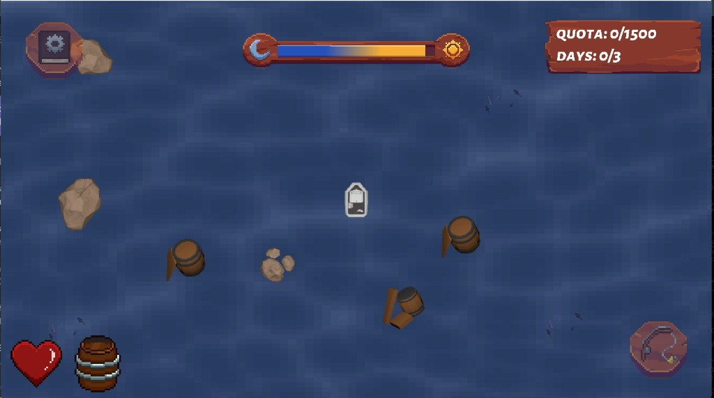
The run is two clocks. Quota (Mandy's generator) is how you fail the job. The body — my health and supply bars — is how you fail the boat. Fishing is the only way to pay the quota. There is no dock and no other source of supply in the world, so wrecks are the only way to buy time on the health curve. If those two verbs feel the same, the loop is mush. They should not: one is greedy, one is survival, and every system below had to keep that split honest.
The quota roll sets the terms before the player touches anything: a daily target of 300, 400, 500, or 600 gold, times a deadline of three to five days, so one contract asks for between 900 and 3,000. A day runs 61.5 seconds, which puts a contract at roughly three to five minutes of play. In fish, an easy day is six Commons and a hard one is twelve — or a single Rare and a bit of luck. Clear it early and the unspent days stay on the clock while another three to five are added and a fresh target is rolled. The run is a chain of contracts rather than a fixed job, and it ends only when you miss one or the boat gives out.
That structure is what pays off the greedy half of the loop. Fishing past the target is not wasted effort, it banks days against a contract you have not seen yet. I did not own the generator, but the daily target swings by a factor of two, so everything I did own had to stay legible at 300 a day and survivable at 600.
Three spots exist at any time. Collide one, enter a fishing state, leave the overworld loop. Animated markers, so a spot is a thing you steer at rather than a silent trigger. A spot leaves the world two ways: you fish it, or it ages out on a random 10–20 second life. Either exit deletes that spot and immediately places a replacement elsewhere, so the count never drops below three.
The timer is the half that carries the pacing. Replace-on-catch alone only reshuffles the ocean when the player acts, which means anyone who parks beside a spot keeps it indefinitely and the map goes static. A random life makes the water move whether or not you engage, so a spot you can see but have not reached is a decision with a clock on it. Random rather than fixed, so the respawn beat cannot be counted and camped.
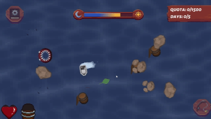
Fishing versus none is a state. In fishing, a marker sweeps a 360px green bar and you have 10 seconds to land it inside the red window. Rarity is picked when the QTE inits, and it drives both numbers that matter: each tier halves the window and doubles the marker speed. Green track, red window, white marker.
| Tier | Window | Height | Speed | Time in window | Value |
|---|---|---|---|---|---|
| Common | 30% | 108px | 200px/s | 0.54s | 50g |
| Uncommon | 15% | 54px | 400px/s | 0.14s | 100g |
| Rare | 7.5% | 27px | 800px/s | 0.03s | 400g |
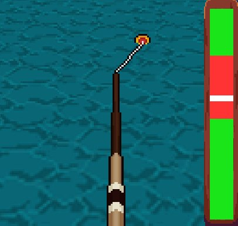
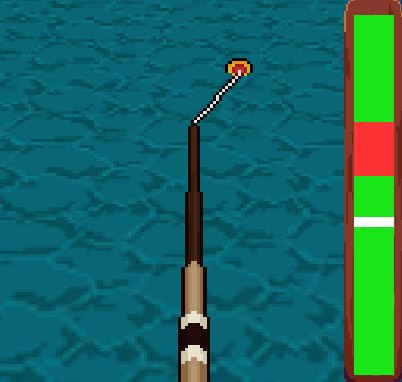
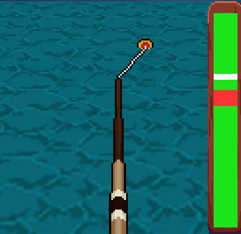
Both multipliers apply at once, so the time the marker actually spends inside the window quarters per tier rather than halving — just over half a second on Common down to three hundredths on Rare, a sixteenth of the reaction time across two tiers. That is the whole point of tying rarity to the skill check. A rare fish is a different test, not the same bar with a bigger payout attached.
Difficulty and payout deliberately do not move together. Uncommon is four times harder than Common for double the gold; Rare is four times harder again for four times the gold. Per unit of timing precision, both of the hard tiers are worth about half what a Common is — which would be an exploit if rarity were something the player chose, but it is rolled when the QTE starts. The tiers that pay for the run are the ones you cannot farm. Trash pays 15g, so the floor is low rather than nothing.
The upper end is deliberately loud. A single Rare is 400g, enough to buy the first five upgrade levels outright, which cost 322g together. Landing one thirty-millisecond window is the difference between a day of grinding and a shopping trip, and that is the payoff that makes the brutal window read as a chance rather than a punishment.
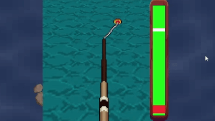
Three tiers ship in the fish data. Epic and Legendary already exist in the QTE code, so a later tier is a data change rather than new code.
Two bars, bottom-left, twelve-frame sprite sheets from empty to full. Supply drains at a flat 5 per second on the water and does not stop until it is empty. Health takes a discrete hit whenever you run into one of the monsters that spawn around the map, but between those hits it does not answer to time, it answers to supply:
| Supply | Health |
|---|---|
| 80 and above | +2.0 /s |
| 75 to 80 | no change |
| 75 and below | −0.1 /s |
| 50 and below | −0.2 /s |
| 25 and below | −0.5 /s |
| empty | −1.0 /s |
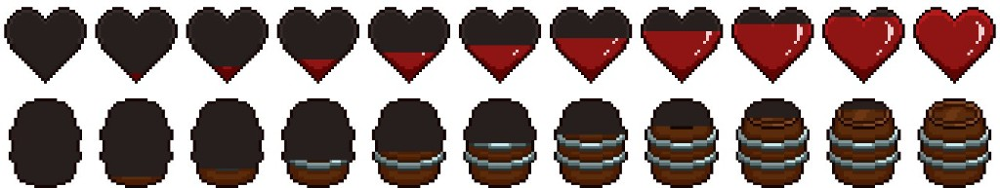
A day runs 61.5 seconds, and that number is what makes the drain bite. A starting tank of 100 empties in twenty seconds, so one tank covers under a third of a day. Run it dry and health bleeds at 1 per second, which means a full boat that never picks anything up dies at around 116 seconds — just under two days. The shortest contract runs three. You cannot survive to the end of even the easiest job on the supply you start with, and with no dock in the game, the detour to a wreck is not an optimisation. It is the only reason a run continues at all.
Those thresholds are raw points, not a percentage of maximum, and that single choice does more work than anything else in the system. At the starting cap of 100 you sit in the regen band for four seconds after a top-up. At a bought-up cap of 400 you sit there for sixty-four — a full in-game day of healing rather than four seconds of it. A bigger tank does not just delay starvation, it multiplies the time you spend healing, which makes the Supply upgrade a health upgrade the shop never advertises.
The gap between 75 and 80 is a dead band where health does nothing. It stops the bar flipping between regen and decay while supply hovers on the boundary — the HUD steps in discrete frames, and an icon that ticks up and down every second reads as broken rather than as tense.
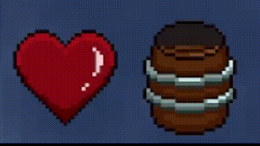
That is the body clock. Quota can be unfair in the other corner; if these icons are unreadable, you cannot make the greedy-or-safe call the loop is built for.
Wrecks reuse the fishing-spot population rule: three in the world at once, random placement, replaced the moment one is consumed. Two textures. Collide one for +50 supply, capped at your current maximum — so a Supply upgrade quietly raises what a wreck is worth, since a bigger tank means less of the 50 spills over the top. Wrecks hold no despawn timer, though — an unclaimed wreck waits, because it is the thing you divert toward when the health curve turns on you, and a resource that expires on its own is not something you can plan a detour around.
The arithmetic is tight on purpose. A day costs 307 supply at the base drain and a wreck returns 50, so simply breaking even means cashing one about every ten seconds. Nobody sustains that, which is the point — the opening run is meant to feel like bailing out a boat, and Supply and Efficiency are what turn the scramble into a job you can actually work.
Wrecks are not a second fishing verb. They dump time back onto the health curve so you can keep fishing. If wrecks paid the quota, they would steal fishing's job. They do not.
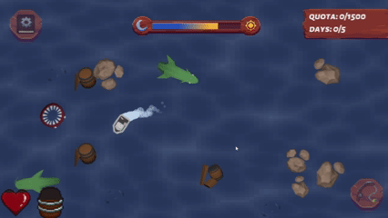
Timothy owned the shop UI. I wired what a purchase actually does to the numbers the HUD reads. Four lines, split by what they touch: two raise a pool, two bend a rate.
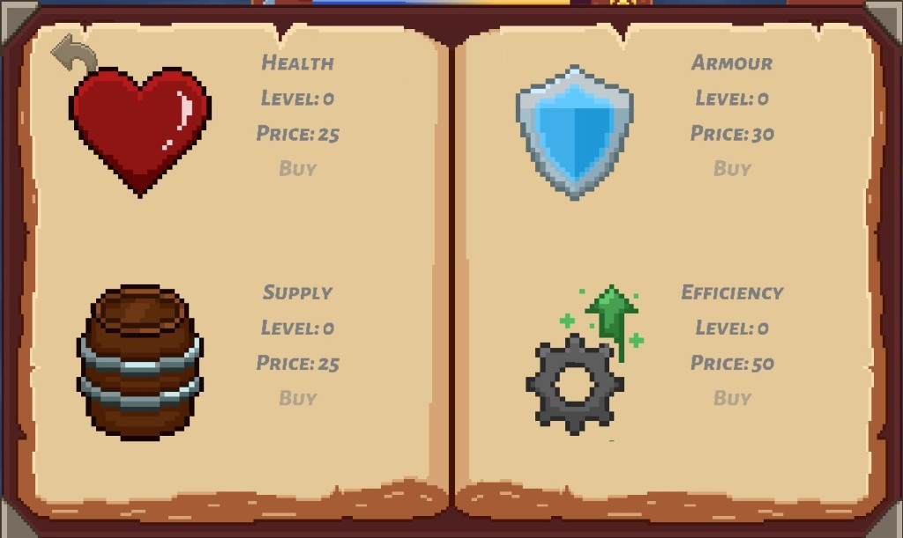
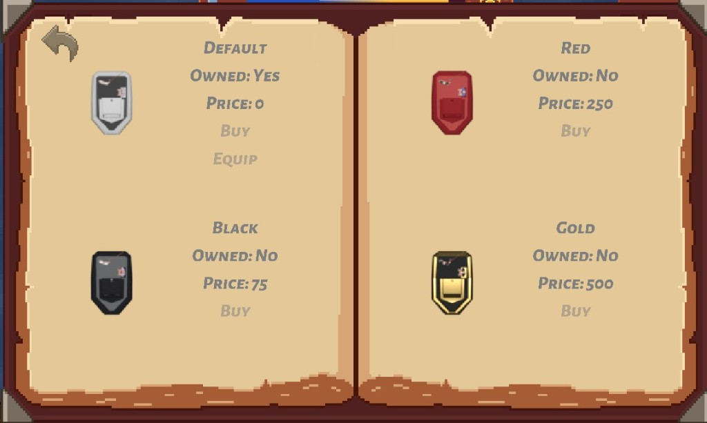
| Upgrade | Base cost | Touches | Per level | Fully bought |
|---|---|---|---|---|
| Health | 25 | Pool | +20 × level to current and max | 400 max |
| Supply | 25 | Pool | +20 × level to current and max | 400 max |
| Armor | 30 | Rate | Incoming damage −10% | −50% damage |
| Efficiency | 50 | Rate | Supply drain −10% | 2.5/s drain |
Health and Supply run an identical curve. Both start at 100, both add 20 × the new level to the current value and the maximum together, and both open at 25g with every subsequent buy costing 1.5× the last, truncated to an integer. There is no level cap.
| Buy | Added | New max | Cost | Points per gold |
|---|---|---|---|---|
| 1 | +20 | 120 | 25 | 0.80 |
| 2 | +40 | 160 | 37 | 1.08 |
| 3 | +60 | 220 | 55 | 1.09 |
| 4 | +80 | 300 | 82 | 0.98 |
| 5 | +100 | 400 | 123 | 0.81 |
| 6 | +120 | 520 | 184 | 0.65 |
The gain grows linearly and the price grows geometrically, so value per gold peaks on the second and third buy and falls away after that. With no hard cap, the price curve is the cap. That matters because contracts chain indefinitely: a hard level cap would eventually leave a surviving player with money and nothing to spend it on, where a geometric price always offers the next buy at a worse rate. The first buy is deliberately the worst rate in the table, which keeps the opening purchase a real decision rather than an obvious one.
Upgrades and the quota draw on one pool. There is no separate upgrade currency, so every purchase is gold not paid toward the contract — a 123g buy against a 400g day hands back roughly a third of that day's target. The shop is not a reward for a good run, it is a bet placed against the deadline.
It also makes the buy order a timing problem rather than only a value one. Gold spent early in a contract has days left to earn itself back through a faster loop; the identical purchase on the final day is pure quota risk with nothing left to recover it. The price curve and the deadline push the same way — buy early or not at all.
Health is the exception that proves it. Because it raises the current value alongside the maximum, it repairs as well as extends, so it stays rational late in a contract in a way the other three do not: when surviving the night is the only thing between you and a failed run, the heal is worth the quota it costs. Rates price above pools because a rate change is permanent pressure relief, where a bigger pool still empties at the same speed. Between them the two rate lines split the threat cleanly: Efficiency answers the drain, which is constant and predictable, and Armor answers the monsters, which are neither.
CSD1451 user testing, 26 surveys. Testers liked the pixel art, controls, QTE, and upgrades. The complaints: 15 of 26 named unrealistic quota as the worst beat, night was too dark, HUD icons too small, the tutorial was missed, and there were too many objects in the water. As a team we tuned day length, quota, and night, and made the tutorial unavoidable.
What I changed, and why:
My bars were the right systems but too quiet in the corner — the body clock testers needed for the greedy-or-safe call was the one they could not see.
Overseas shipped at the end of the 14-week trimester and graded an A. The HUD readability the surveys flagged was fixed before the deadline, so the bars ended up doing the job they were built for.
What I would change is not in the tuning list above. Every entry in that list is a number I moved, and moving them was slower than it should have been. I had hardcoded values I did not expect to revisit, nothing was exposed for editing, and I had no way to watch the sim while it ran — so each retune meant a rebuild to see whether a guess was right. The habit I took out of this project is to expose tunables and stand up a debug view before a system needs tuning, because any value can become one you need to change the moment someone else plays the game, including the ones that looked settled when I typed them.
The other lesson was about building on someone else's code. We discussed implementation and ideation as a team and still finished with different understandings of the same system, which is how you end up calling a function that does almost, but not quite, what you assumed. Agreeing on an idea is not the same as sharing a model of it, and I now ask whoever wrote a thing before I build on top of it.
Both went straight into the next project. On Hellmaker I built the engine's debug layer and the ImGui console the team used to watch the engine while it ran — the tool I wanted here.
Fishing)FishingSkill)Bar)shipwrecks)Game.cppUser testing report (Team IDK)
Next Hellmaker — the engine debugger and editor tooling this project taught me to build first.
Questions soniclinxin@gmail.com · LinkedIn